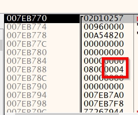

set a break point at CreateProcessA >> run till it >> examine the stack and you will find that the value of dwCreationFlags is
"0x04"

This value means "Create new process in Suspended mode" which is used by malware authors for injection technique called
"Process Hollowing" by doing something like a brain transplant to this new suspended process by evacuating its code then injecting malicious code.
This is the usual API pattern of Process Hollowing:
- CreateProcess in suspended state
- NtUnmapViewOfSection
- VirtualAllocEx
- WriteProcessMemory
- ResumeThread
you may find these functions or their variants staring with Nt/Zw/Rtl